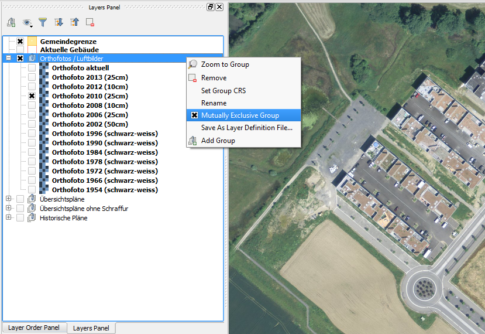
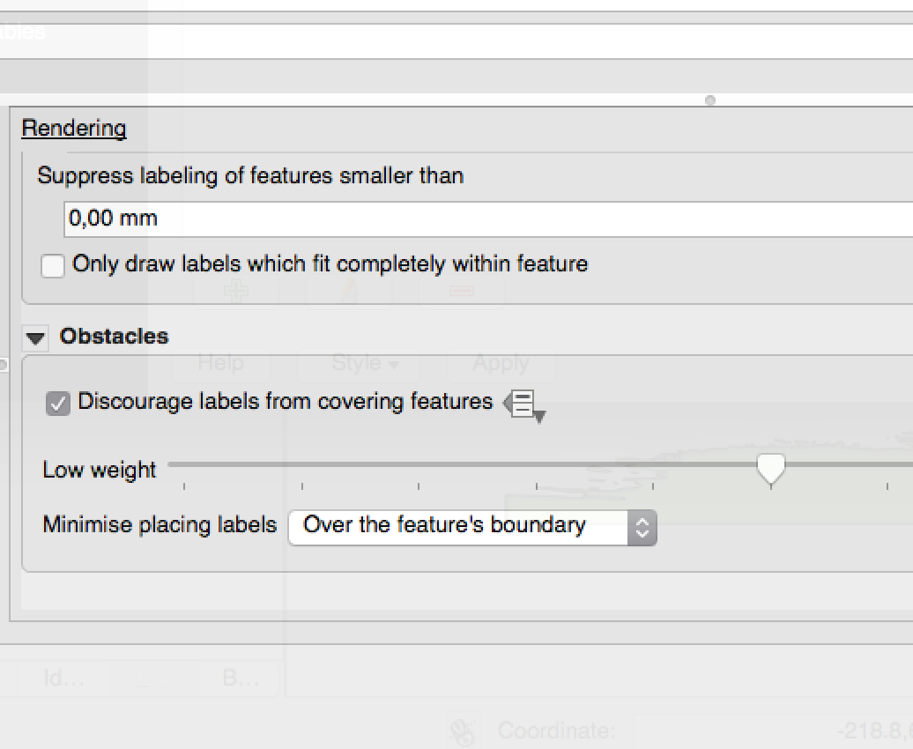
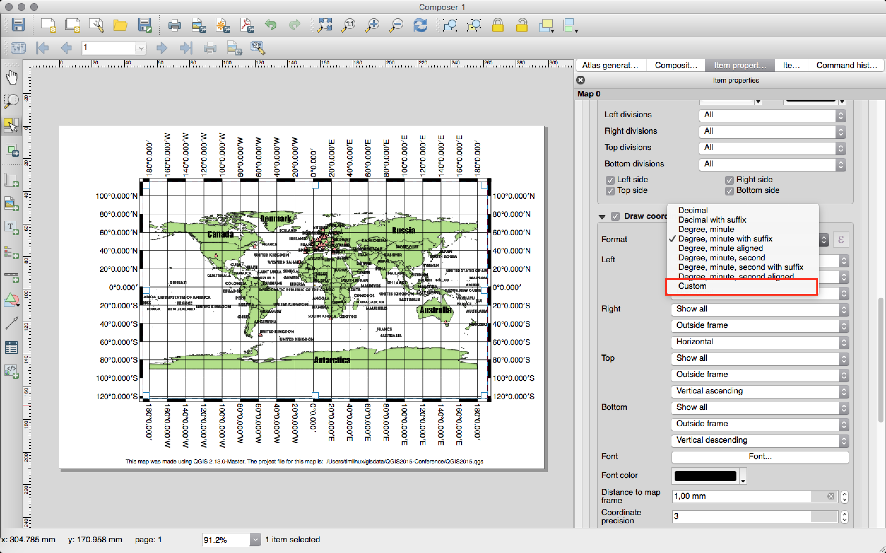

Jurnalul schimbărilor pentru QGIS 2.12¶

Acesta este jurnalul schimbărilor pentru următoarea versiune de QGIS - versiunea 2.12.0 «Lyon» - orașul gazdă al întâlnirii dezvoltatorilor din Aprilie 2012.
Noi Funcționalități în QGIS 2.12 «Lyon»
Aceasta este cea mai nouă lansare din seria noastră de versiuni elaborate o dată la 4 luni. Ea vă oferă acces la noile caracteristici dezvoltate, și vă prezintă progresele «de ultimă oră» ale QGIS.
QGIS «Lyon» conține noi caracteristici minunate. Se pot evidenția suportul pentru etichetarea bazată pe reguli, stilizarea tabelelor de atribute pe bază de reguli, verificatorul avansat de geometrie, suportul pentru digitizarea geometriilor bazate pe curbe, un management mai bun al autentificării și mult, mult mai multe! De asemenea, QGIS 2.12 are eliminate multe erori sau pierderi de memorie. Funcționalitățile din QGIS 2.12 vor fi incluse în următoarea versiune LTR (programată pentru lansare în 2016), astfel încât folosind această versiune veți avea o oportunitate excelentă de a testa noi caracteristici, care vor fi prezente în următorul LTR.
Ori de câte ori se adaugă noi caracteristici în aplicație, apare posibilitatea introducerii unor noi erori - dacă întâmpinați probleme cu această versiune, vă rugăm să le semnalați la QGIS Bug Tracker. Dacă lucrați într-un mediu de producție, în care doriți să fie mai conservativi față de introducerea noilor caracteristici noi pentru utilizatorii dvs., vă oferim și o Versiune de QGIS cu suport pe Termen Lung (LTR). Actualul LTR se află la versiunea 2.8.3 și este disponibilă la download.qgis.org.
Mulțumiri
Dorim să le mulțumim dezvoltatorilor, tester-ilor, autorilor documentațiilor și tuturor acelor persoane care, în mod voluntar, au consumat timp și efort (sau au finanțat alte persoane în acest scop).
From the QGIS community we hope you enjoy this release! If you wish to donate time, money or otherwise get involved in making QGIS more awesome, please wander along to qgis.org and lend a hand!
În fine, am dori să mulțumim sponsorilor noștri oficiali pentru sprijinul financiar de neprețuit, pe care l-au oferit acestui proiect:
- Sponsor de AUR: Asia Air Survey, Japonia
- Sponsor de ARGINT: Universitatea de Știință și Tehnologie AGH, Krakow, Polonia
- Sponsor de ARGINT: State of Vorarlberg, Austria
- Sponsor de ARGINT: Oficiul Lucrărilor Publice, Irlanda
- Sponsor de ARGINT: Sourcepole AG, Elveția
- Sponsor de BRONZ: Lutra Consulting, UK
- Sponsor de BRONZ: WhereGroup GmbH & Co. KG, Germania
- Sponsor de BRONZ: Nicholas Pearson Associates, UK
- Sponsor de BRONZ: QGIS Poland, Polonia
- Sponsor de BRONZ: www.terrelogiche.com, Italia
- Sponsor de BRONZ: GeoSynergy, Australia
- Sponsor de BRONZ: Gaia3D, Coreea de Sud
- Sponsor de BRONZ: Royal Borough of Windsor and Maidenhead, UK
- Sponsor de BRONZ: Chartwell Consultants Ltd, Canada
- Sponsor de BRONZ: Trage Wegen vzw, Belgia
- Sponsor de BRONZ: GFI SRL - Societatea pentru Tehnologia Informației, Germania
- Sponsor de BRONZ: GKG Kassel,(Dr.-Ing. Claas Leiner), Germania
- Sponsor de BRONZ: GIS-Support, Polonia
- Sponsor de BRONZ: ADLARES GmbH, Germania
- Sponsor de BRONZ: www.molitec.it, Italia
- Sponsor de BRONZ: www.argusoft.de, Germania
- Sponsor de BRONZ: Customer Analytics, USA
- Sponsor de BRONZ: Avioportolano Italia
- Sponsor de BRONZ: Facultatea de Geologie, Geofizică și Protecție a Mediului, AGH, Universitatea de Științe și Tehnologie, Polonia
- Sponsor de BRONZ: Urbsol, Australia
- Sponsor de BRONZ: MappingGIS, Spania
- Sponsor de BRONZ: GIS3W, Italia
A current list of donors who have made financial contributions large and small to the project can be seen on our donors list. If you would like to become and official project sponsor, please visit our sponsorship page for details. Sponsoring QGIS helps us to fund our six monthly developer meetings, maintain project infrastructure and fund bug fixing efforts.
QGIS este un soft gratuit iar dvs. nu aveți obligația de a plăti pentru folosirea lui - de fapt, vrem să încurajăm oamenii de oriunde să-l folosească, indiferent de starea financiară sau socială - având convingerea că, punerea la dispoziția utilizatorilor a posibilităților de decizie spațială, va duce la o societate mai bună pentru întreaga omenire.
- Generalități
- Caracteristică: Un nou ecran de întâmpinare
- Caracteristică: Îmbunătățiri aduse calității codului
- Caracteristică: Editor de setări avansat
- Caracteristică: Grupuri cu Excludere Reciprocă în Arborele Straturilor
- Caracteristică: Filtrarea valorilor din câmpuri, în widget-ul de expresii
- Caracteristică: Suport pentru Interfețe cu Utilizatorul personalizabile
- Caracteristică: Noi funcții pentru expresii în 2.12
- Caracteristică: Variabile în expresii
- Instrumentele de analiză
- Opțiunile Aplicației și ale Proiectului
- Navigatorul
- Furnizorii de date
- Gestiunea datelor
- Digitizarea
- Etichetarea
- Caracteristică: Cvadrant definit cu ajutorul datelor, în modul „din jurul punctului”
- Caracteristică: Desenarea doar a etichetelor care se potrivesc în interiorul poligoanelor
- Caracteristică: Prioritate de control a obstacolelor de etichetare
- Caracteristică: Noi opțiuni pentru controlul modului în care straturile poligonale pot acționa ca obstacole
- Caracteristică: Control definit cu ajutorul datelor, pentru prioritatea etichetelor
- Caracteristică: Opțiuni doar pentru straturile obstacol
- Caracteristică: Etichetare bazată pe reguli
- Compozitorul de Hărți
- Caracteristici: Îmbunătățiri aduse navigării prin Atlas
- Caracteristică: Format personalizat pentru adnotările grilelor
- Caracteristică: Manipularea textului multilinie, și împachetare automată a textului, în tabelele de atribute ale compozitorului
- Caracteristică: Personalizare avansată a culorii de fundal din celule
- Caracteristică: S-a adăugat o opțiune de potrivire a conținutului la pagină, și opțiuni de decupare a exporturilor după conținut
- Caracteristică: Forțarea randării straturilor vectoriale ca imagini raster
- Caracteristică: Control definit cu ajutorul datelor, pentru straturile hărții și pentru presetările stilului
- Caracteristică: Opțiune de a ascunde paginile din vizualizare/export
- Plugin-uri
- Programabilitatea
- Caracteristică: Instrumentele specifice hărții au fost mutate din app->gui
- Caracteristică: Editare straturi prin intermediul `with edit(layer):`
- Caracteristică: Un nou API pentru motorul de etichetare (QgsLabelingEngineV2)
- Caracteristică: Deschidere script-uri într-un editor extern
- Caracteristică: Noi clase pentru programele PyQGIS
- QGIS Server
- Simbologie
- Caracteristică: Export de miniaturi din managerul de stiluri
- Caracteristică: O nouă opțiune pentru a limita dimensiunea, în mm, la utilizarea unităților de mărime ale hărții
- Caracteristică: Îmbunătățiri aduse renderului de deplasare
- Caracteristică: Toate gamele de culori pot fi de acum editate
- Caracteristică: Gestionare îmbunătățită a contururilor simbolurilor SVG
- Caracteristică: S-au adăugat pixelii ca opțiune pentru toate unitățile de mărime pentru simbologie
Generalități¶
Caracteristică: Un nou ecran de întâmpinare¶
În loc de a afișa un simplu canevas alb, QGIS vă va prezenta de acum o listă a proiectelor cele mai recente, însoțite de miniaturi, pentru a face rapidă și ușoară revenirea la activitatea efectuată în ultima sesiune.
Această funcționalitate a fost dezvoltată de: Matthias Kuhn de la OPENGIS.ch

Caracteristică: Îmbunătățiri aduse calității codului¶
Prin utilizarea bibliotecii de curățare a adreselor, sute de pierderi de memorie au fost identificate și remediate. S-a utilizat în mod regulat Coverity Scan la scanarea automată a codului, în scopul identificării potențialelor probleme, iar densitatea Coverity a defectelor noastre este acum impresionant de scăzută, fiind de numai 0.02 defecte la 1000 de linii de cod. De asemenea, biblioteca unității de teste automate a crescut semnificativ pe durata dezvoltării 2.12, având ca rezultat identificarea și remedierea imediată a mai multor regresii. În 2.12 am adăugat, de asemenea testarea continuă pe OSX, astfel încât fiecare actualizare de cod este testată cu ajutorul unității de testare, atât pe platforma Linux, cât și pe OSX.

Caracteristică: Editor de setări avansat¶
Un nou panou a fost adăugat în dialogul setărilor, permițându-vă să editați oricare dintre opțiunile deja definite în profilul dvs. Acest lucru este destinat doar utilizatorilor avansați, deoarece ați putea experimenta un comportament neașteptat din partea QGIS, dacă modificați aceste setări fără a înțelege pe deplin ceea ce faceți.
Această funcționalitate a fost dezvoltată de: Matthias Kuhn de la OPENGIS

Caracteristică: Grupuri cu Excludere Reciprocă în Arborele Straturilor¶
Cu această funcționalitate puteți crea grupuri de straturi, în care doar un singur strat să poată fi vizibil la un moment dat. Funcționalitatea poate fi aplicată individual grupurilor din arborele cu straturi, care apare la accesarea meniului contextual.
Această funcționalitate a fost dezvoltată de: Martin Dobias de la Lutra Consulting prin subcontract cu Gis3W
Această funcționalitate a fost finanțată de: Regiunea Toscana (Italia) - SITA (CIG: 63526840AE)

Caracteristică: Filtrarea valorilor din câmpuri, în widget-ul de expresii¶
La crearea unei expresii care utilizează valori dintr-un câmp, puteți filtra de acum panoul de previzualizare a valorilor câmpului.
Această funcționalitate a fost dezvoltată de: Salvatore Larosa

Caracteristică: Suport pentru Interfețe cu Utilizatorul personalizabile¶
QGIS 2.12 acceptă șabloane pentru interfața cu utilizatorul, pe care le puteți utiliza pentru a personaliza aspectul ferestrelor, al butoanelor etc. În mod implicit, sunt livrate două teme: Default și Night mapping. Cea de-a doua este o temă întunecată pe care unele persoane o pot prefera unei teme luminoase, care obosește ochii. De asemenea, dacă știți un pic de CSS, vă puteți crea cu ușurință propriile teme…
Aflați mai multe despre suportul pentru teme, lecturând articolul de pe blogul lui Nathan Woodrow.
Această funcționalitate a fost dezvoltată de: Nathan Woodrow

Caracteristică: Noi funcții pentru expresii în 2.12¶
Au fost adăugate un set de funcții pentru „potrivire fuzzy”. Acestea includ funcții pentru identificarea similitudinii între două șiruri și, de asemenea, pentru efectuarea de potrivire fonetică între șiruri de caractere, permițând efectuarea de filtre pentru înregistrări care „aproape se potrivesc” cu un șir specificat.
Au fost adăugate mai multe funcții care lucrează cu geometria, dintre care amintim:
num_points(geom)pentru calcularea numărului de noduri dintr-o geometriearea(geom),length(geom)șiperimeter(geom), pentru calcularea ariei, lungimii și perimetrului oricărui obiect geometric. Înainte erau posibile calcularea ariei, lungimii și perimetrului doar pentru geometria entității curente.start_point(geom),end_point(geom),point_n(geom, n), pentru obținerea primului, ultimului și a unui punct specificat dintr-o geometriemake_point(x,y), pentru crearea manuală a geometriei unui punct- funcțiile
x(geom),y(geom)care returnează coordonatele X și Y ale geometriilor punctelor, sau centroidul X/Y al geometriilor non-punct
O nouă funcție project_color a fost adăugată, care vă permite să preluați, după nume, o culoare din schema de culori a proiectului. Acest lucru vă permite să creați «culori legate», în cazul în care culoarea componentelor de simbolizare, sau de etichetare, poate fi legată de o culoare din schema de culori a proiectului. Actualizați culoarea din schemă, iar toate culorile legate vor fi actualizate în mod automat, pentru a se potrivi!
În plus, unele expresii foarte utile au fost portate din plugin-ul expressions++, incluzând:
color_part: permite obținerea componentei specificate dintr-o culoare (de exemplu, roșu, nuanță, alfa)set_color_part: permite suprascrierea unei componente de culoare, cum ar fi, de exemplu, modificarea valorii alfa (opacitate) a unei culoriday_of_week: returnează, sub formă de număr, ziua din săptămână al unei date
În plus, ajutorul context pentru funcțiile expresiilor a fost îmbunătățit, pentru o mai bună lizibilitate.

Caracteristică: Variabile în expresii¶
Puteți defini de acum variabile personalizate pentru utilizarea în expresii. Variabilele pot fi definite la nivelul global al aplicației, la nivel de proiect, la nivelul stratului și la nivelul compoziției. Similar regulilor CSS, variabilele pot fi suprascrise - de exemplu, o variabilă la nivel de proiect va rescrie orice variabilă setată la nivel de aplicație. Puteți folosi aceste variabile pentru a construi șiruri de text sau alte expresii personalizate. De exemplu, în compozitor crearea unei etichete cu acest conținut:
Această hartă a fost creată cu ajutorul QGIS [% @qgis_version %]. Fișierul proiect pentru această hartă este: [% @project_path %]
Va produce o etichetă care arată în felul următor:
Această hartă a fost creată cu ajutorul QGIS 2.12. Fișierul proiect pentru această hartă este: /gis/qgis-user-conference-2015.qgs
Puteți gestiona variabilele globale din meniul Settings -> Options, iar variabilele la nivel de proiect din Proprietățile proiectului (inclusiv adăugarea propriilor variabile personalizate).
Această funcționalitate a fost dezvoltată de: Nyall Dawson

Instrumentele de analiză¶
Caracteristică: Numărul de vertecși este adăugat la câmpurile derivate, în instrumentul de identificare¶
Folosind instrumentul de identificare pe o entitate de tip linie, veți observa de acum și numărul de vertecși ai entității, ca un atribut suplimentar derivat.
Caracteristică: Instrument pentru alinierea rasterelor¶
Acest nou instrument din biblioteca qgis_analysis este capabil să ia mai multe raster de intrare și:
- să le reproiecteze în același CRS
- să le reeșantioneze la aceeași dimensiune de celulă și offset de grilă
- să decupeze regiunea de interes
- să rescaleze valorile atunci când este necesar
Această funcționalitate a fost dezvoltată de: Martin Dobias de la Lutra Consulting prin subcontract cu Kartoza
Această funcționalitate a fost finanțată de: DFAT pentru proiectul InaSAFE

Caracteristică: Plugin-urile de Verificare a Geometriei și de Acroșare a Geometriei¶
Două plugin-uri noi (pe care trebuie să le activați manual în managerul de plugin-uri) sunt disponibile pentru validarea și corectarea geometriei. Plugin-ul Verificator de Geometrie (foto dreapta) va verifica și corecta setul dvs. vectorial de date, pentru diverse tipuri de erori sistematice, și va încerca să le rezolve în locul dvs. După rezolvarea unei erori, lista erorilor se actualizează automat, astfel încât, dacă, de exemplu, remedierea unei erori rezolvă, de asemenea, alte erori, toate erorile vor fi eliminate din lista problemelor.
Cu ajutorul instrumentului de Acroșare Geometrie, puteți alinia marginile și vertecșii unui strat vectorial față de marginile și vertecșii celui de-al doilea strat, folosind o toleranță definită de utilizator.
Această funcționalitate a fost dezvoltată de: Sandro Mani de la Sourcepole AG
Această funcționalitate a fost finanțată de: Cantonul Solothurn, Elveția

Opțiunile Aplicației și ale Proiectului¶
Caracteristică: Managementul parolelor criptate¶
QGIS 2.12 introduce un nou sistem de autentificare (see PR 2330, QEP 14). Iată ce este inclus:
- Configurații de autentificare parolă-master-criptată, stocate într-o bază de date SQLite
- Arhitectură de plugin pentru metoda de autentificare (similară furnizorilor de date)
- Plugin-ul metodei de autentificare de bază
- Plugin de bază integrat cu PostGIS, și conexiunile furnizorului OWS
- Instalare pe baza numelui de utilizator/parolei curente (pe deplin funcțională)
- Configurații de conectare la server SSL (cu salvarea excepțiilor sau a configurărilor personalizate pentru erorile de conexiune SSL)
Legat de autentificarea PKI:
- Importare Autorități de Certificare suplimentare, emitenți intermediari de certificare, și pachete personale de identitate
- Gestiune a componentelor certificatelor, similară cu cea din Firefox
- Plugin-uri dedicate metodelor de autentificare pentru pachete PEM și PKCS12 și pentru identități personale stocate pe disc
- Integrare cu conexiuni către furnizor OWS (pentru PostGIS și alte baze de date mai este de lucru)
Pentru scenariul proiectelor partajate, inclusiv instalarea de pe o unitate de rețea, puteți seta ID-ul configurației de autentificare (authcfg) la ceva care este partajat între utilizatori.
Având în vedere că ID-ul authcfg este încorporat în fișierul proiectului, fiecare utilizator trebuie doar să facă o configurare de autorizare care are prerogativele specifice pentru această resursă, apoi editați ID-ul (înainte de crearea configurării sau după) la același ID din fișierul de proiect. Apoi, atunci când resursele se încarcă, aceeași configurație va fi interogată de QGIS-ul oricui, doar cu credențialele respective, pentru metoda de autentificare utilizată.
Pentru dialogul de Gestiune a Straturilor Defecte, utilizatorii pot Aadăuga/Edita/Elimina configurările de autentificare, și să actualizeze URI-ul sursei de date pentru a se potrivi. Deci, în scenariul unui proiect partajat, utilizatorul ar putea adăuga imediat o nouă configurare de autentificare corespunzătoare (și să vadă exact care este ID-ul authcfg partajat, pentru a-l utiliza) la încărcarea proiectului.
În prezent, auto-setarea parolei master se poate face prin intermediul Python, sau prin intermediul unui plugin C++ personalizat, o dată cu lansarea instalării printr-un apel la QgsAuthManager::instance()->setMasterPassword( "mypassword", true ), sau prin variabila de mediu QGIS_AUTH_PASSWORD_FILE, pentru a seta calea către un fișier ce conține file parola master.
Notă: pentru Server, se pot folosi, de asemenea, QGIS_AUTH_DB_DIR_PATH pentru a seta calea către un director qgis-auth.db, și QGIS_AUTH_PASSWORD_FILE pentru a seta calea către un fișier cu parola master, de pe server.
Documentația cu exxemple PKI: https://github.com/dakcarto/QGIS-Enhancement-Proposals/blob/auth-system/extras/auth-system/pkiuser.rst
Această funcționalitate a fost dezvoltată de: Larry Shaffer
Această funcționalitate a fost finanțată de: Boundless Spatial, Inc.

Navigatorul¶
Caracteristică: Îmbunătățiri aduse conexiunilor PostGIS din navigator¶
Navigatorul QGIS suportă de acum funcționalități suplimentare pentru conexiuni PostGIS, inclusiv capacitatea de a crea, redenumi și șterge scheme, suport pentru redenumire și trunchiere straturi și copiere tabele dintr-o schemă în alta.
Această funcționalitate a fost dezvoltată de: Nyall Dawson
Copierea tabelei: Jürgen Fischer de la norBIT GmbH

Furnizorii de date¶
Caracteristică: Îmbunătățiri aduse furnizorului PostGIS¶
Următoarele îmbunătățiri au fost aduse furnizorului PostGIS:
- îmbunătățiri de performanță pentru renderele bazate pe reguli, în cazul straturilor PostGIS
- s-a adăugat suport pentru chei compuse, în cadrul vederilor
Dezvoltare chei compuse: Jürgen Fischer de la norBIT GmbH

Gestiunea datelor¶
Caracteristică: Îmbunătățiri în DBManager¶
S-au adus o serie de îmbunătățiri instrumentului DB Manger:
- În DB Manager, puteți exporta de acum datele dvs. pentru orice format de date acceptat de OGR, în loc de fișier shape, care a fost singurul disponibil în versiunea anterioară.
- Oracle Spatial este de acum acceptat în DBManager
- La importarea datelor într-o tabelă, puteți utiliza noua opțiune importă doar entitățile selectate, pentru a restricționa ceea ce se importă.
- De acum, ferestrele noilor interogări sunt create sub formă de file, pentru a reduce numărul ferestrelor de dialog

Caracteristică: Formatări condiționale pentru celulele tabelelor cu atribute¶
Aceasta este o îmbunătățire majoră a suportului de randare a tabelei de atribute din QGIS. De acum, puteți stiliza celulele tabelului în conformitate cu normele. De exemplu, puteți colora în roșu toate celulele care au o populație mai mică de 50 000. Opțiunea este activată printr-o nouă pictogramă existentă în bara de instrumente în partea din dreapta sus a ferestrei tabelei de atribute. Puteți citi mai multe despre această funcție pe un articol de blog al lui Nathan Woodrow.
Această funcționalitate a fost dezvoltată de: Nathan Woodrow

Caracteristică: Suport pentru căile relative ale widget-urilor¶
Pentru următoarele tipuri de widget-uri de editare:
- Nume de Fișier
- Foto
- Vizualizare Web
În cazul în care calea este selectată cu exploratorul de fișiere se află în același director cu al fișierului proiectului .qgs, atunci ea va fi convertită în căi relative. Acest lucru crește portabilitatea unui proiect QGIS care are atașate informații multimedia.
Această funcționalitate a fost dezvoltată de: Matthias Kuhn de la OPENGIS
Această funcționalitate a fost finanțată de: Alta ehf

Digitizarea¶
Caracteristică: Îmbunătățiri aduse digitizării¶
În QGIS 2.10 am menționat că există o nouă arhitectură geometrică pentru QGIS, dar nu toate funcționalitățile sunt susținute de instrumentele de digitizare. În QGIS 2.12 avem acum suport de editare pentru crearea de curbe / «șiruri circulare`. Rețineți iarăși că trebuie să utilizați un furnizor de date (de exemplu, PostGIS, GML sau WFS) care acceptă curbe. De asemenea, și următoarele îmbunătățiri ale instrumentelor de digitizare, se regăsesc în QGIS 2.12:
- instrument de adăugare a unui șir circular, cu două puncte și o rază
- instrument pentru a adăuga șiruri circulare cu un punct de pornire, unul pe curbă și unul final
- posibilitate de anulare a desenării unor noi entități
- afișarea unui tabel pentru nod, la editarea cu ajutorul instrumentului nod, care vă permite să introduceți manual coordonate exacte x și y pentru noduri, precum și valorile z și m (în funcție de tipul stratului)
În plus, multe dintre instrumentele de editare și de modificare a geometriei au fost actualizate, pentru a funcționa corect cu straturile care conțin z sau m dimensiuni.
Această funcționalitate a fost dezvoltată de: Marco Hugentobler de la Sourcepole AG
Această funcționalitate a fost finanțată de: Cantonul Solothurn, Elveția

Etichetarea¶
Caracteristică: Cvadrant definit cu ajutorul datelor, în modul „din jurul punctului”¶
De acum, este posibilă specificarea unui cvadrant definit cu ajutorul datelor, atunci când o etichetă de tip punct este setată la modul de plasare În Jurul Punctului. Acest lucru vă permite să suprascrieți manual plasarea cvadrantului pentru o etichetă specifică, permițând în același timp etichetelor rămase să beneficieze de plasare automată.
Parcurgeți articolul pentru mai multe detalii.
Această funcționalitate a fost dezvoltată de: Nyall Dawson

Caracteristică: Desenarea doar a etichetelor care se potrivesc în interiorul poligoanelor¶
Straturilor poligoanelor li s-a adăugat opțiunea de desenare a etichetelor care se încadrează complet în entitățile poligonale.
Această funcționalitate a fost dezvoltată de: Nyall Dawson
Caracteristică: Prioritate de control a obstacolelor de etichetare¶
În 2.12 este posibilă, de acum, specificarea priorității pentru obstacolele de etichetare. Acest lucru vă permite să faceți etichetele să prefere suprapunerea entităților din anumite straturi, mai degrabă decât altele. Prioritatea poate fi, de asemenea, definită cu ajutorul datelor, astfel încât anumite entități sunt mai susceptibile de a fi acoperite comparativ cu altele. Puteți utiliza expresiile sau câmpurile definite de date, pentru a controla dacă o entitate specifică din strat, va acționa ca un obstacol pentru etichete.
Această funcționalitate a fost dezvoltată de: Nyall Dawson

Caracteristică: Noi opțiuni pentru controlul modului în care straturile poligonale pot acționa ca obstacole¶
Au fost adăugate noi opțiuni pentru a controla modul în care trebuie să fie plasate etichetele, pentru a evita suprapunerea entităților din straturile poligonale. Opțiunile sunt de a evita fie plasarea etichetelor în interiorul poligoanelor, fie suprapunerea lor peste limitele poligonale. Evitarea plasării etichetelor deasupra limitelor este utilă pentru straturile cu limite regionale, unde entitățile acoperă o întreagă suprafață. În acest caz, este imposibilă evitarea plasării etichetelor în cadrul acestor entități și se pare că este mult mai bine să evitați plasarea acestora peste granițele dintre entități. Rezultatul constă într-o mai bună plasare cartografică a etichetelor.
Parcurgeți articolul pentru mai multe detalii.
Această funcționalitate a fost dezvoltată de: Nyall Dawson

Caracteristică: Control definit cu ajutorul datelor, pentru prioritatea etichetelor¶
Această caracteristică, solicitată adesea, permite utilizatorilor setarea priorității pentru etichetele individuale. În versiunile anterioare, QGIS a permis stabilirea priorității etichetei pentru un strat întreg, dar nu a existat nici o opțiune de a controla prioritatea entităților dintr-un strat. Acum, puteți folosi o expresie definită cu ajutorul datelor sau a unui câmp, pentru a prioritiza etichetarea anumitor entități înaintea altora, în cadrul unui strat!
Parcurgeți articolul pentru mai multe detalii.
Această funcționalitate a fost dezvoltată de: Nyall Dawson

Caracteristică: Opțiuni doar pentru straturile obstacol¶
Acest lucru permite utilizatorilor să stabilească un strat doar ca obstacol pentru etichetele altui, fără randarea etichetelor proprii. Aceasta înseamnă că un strat neetichetat poate acționa ca un obstacol pentru etichetele din alte straturi, astfel încât desenarea acestora deasupra entităților din stratul obstacol va fi descurajată, și permite plasarea etichetei automat îmbunătățită, prin prevenirea suprapunerii etichetelor și a entităților din alte straturi.
În captura de ecran, puteți vedea că străzile au posibilitatea de a activa „Descurajarea acoperirii de către etichete a entităților din acest strat”. Etichetele roșii provenite din geometriile poligonale sunt astfel plasate, încât să evite intersecția cu axele străzii. Trebuie să activați „Orizontal” sau „Liber” pe stratul poligonal, pentru a obține rezultate corecte.
Rețineți că este, de asemenea, posibilă atât etichetarea unui strat, cât și funcționarea ca obstacol a unui strat, permițând bifarea casetei „Descurajează etichetele să acopere entitățile” din fila „randare” a setării etichetei.
Parcurgeți articolul pentru mai multe detalii.
Această funcționalitate a fost dezvoltată de: Nyall Dawson

Caracteristică: Etichetare bazată pe reguli¶
Etichetele de pe entități pot fi de acum stilizate folosind reguli, pentru a adăuga chiar și mai mult control asupra plasării și stilizării etichetelor. Similar cu randarea cartografică bazată pe reguli, regulile de etichetare pot fi imbricate pentru a permite opțiuni de stilizare extrem de flexibile. De exemplu, puteți randa etichetele diferit, în funcție de dimensiunea entităților în care vor fi incluse (așa cum este ilustrat în captura de ecran).
Parcurgeți articolul de blog pentru mai multe detalii.
Această funcționalitate a fost dezvoltată de: Martin Dobias de la Lutra Consulting prin subcontract cu Gis3W
Această funcționalitate a fost finanțată de: Regiunea Toscana (Italia) - SITA (CIG: 63526840AE)

Compozitorul de Hărți¶
Caracteristici: Îmbunătățiri aduse navigării prin Atlas¶
De acum puteți seta un câmp sau o expresie ca „nume de pagină” pentru compozițiile atlasului. În bara de instrumente a atlasului a fost adăugată o casetă combinată pentru numărul paginii, care arată atât o listă cu numerele de pagină, cât și cu numele disponibile. Aceasta vă permite să săriți direct la o anumită pagină din atlas.
Numele paginii poate fi, de asemenea, utilizat în cadrul expresiilor de simbolizare și de etichetare, pentru a permite o stilizare avansată a entităților Atlasului.
Această funcționalitate a fost dezvoltată de: Nyall Dawson

Caracteristică: Format personalizat pentru adnotările grilelor¶
Adnotările din grila hărții din Compozitor pot fi de acum stilizate în formate personalizate, care sunt evaluate cu ajutorul motorului de expresii. De acum puteți utiliza orice format de numerotare pe care îl necesită grila hărții!
Această funcționalitate a fost dezvoltată de: Nyall Dawson

Caracteristică: Manipularea textului multilinie, și împachetare automată a textului, în tabelele de atribute ale compozitorului¶
Tabela de atribute din compozitor include de acum suport complet pentru șirurile de caractere extinse pe linii multiple. De asemenea, a fost adăugat controlul asupra alinierii verticale a textului dintr-o celulă, împreună cu opțiuni pentru încadrarea textului într-un anumit număr de caractere, sau pentru calcularea în mod automat a încadrării textului pentru a se potrivi cu dimensiunea coloanelor. Pentru a forța aranjarea automată a textului la înălțimea rândului, setați lățimea coloanei la o dimensiune fixă.
Această funcționalitate a fost dezvoltată de: Nyall Dawson
Această funcționalitate a fost finanțată de: City of Uster

Caracteristică: Personalizare avansată a culorii de fundal din celule¶
Această modificare permite utilizatorilor să stabilească diferite culori pentru rânduri și coloane alternative, pentru primele/ultimele rânduri/coloane, din tabela de atribute a compozitorului.
Această funcționalitate a fost dezvoltată de: Nyall Dawson
Această funcționalitate a fost finanțată de: Ville de Morges

Caracteristică: S-a adăugat o opțiune de potrivire a conținutului la pagină, și opțiuni de decupare a exporturilor după conținut¶
O nouă opțiune a fost adăugată în panoul compoziției, pentru a redimensiona o compoziție față de conținutul său, cu margini suplimentare, opționale, dacă este necesar.
Exporturile compozitorului pot fi, de asemenea, decupate după conținutul lor. Dacă este selectată această opțiune, imaginea rezultată din compozitor va include doar zona de compoziție cu conținut. Există, de asemenea, o opțiune de adăugare a unor margini în jurul limitelor elementelor, dacă este necesar.
În cazul în care compoziția include o singură pagină, atunci ieșirea va fi dimensionată pentru a include TOTUL în compoziție. Dacă este o compoziție pe mai multe pagini, atunci fiecare pagină va fi decupată pentru a include din acea pagină numai zona cu elemente.
A fost adăugat un nou dialog cu opțiuni de export pentru a facilita exportul imaginilor, care include, de asemenea, comenzi rapide la îndemână, pentru a suprascrie rezoluția de imprimare sau dimensiunile imaginii exportate.
Sponsorizat de: NIWA
Această funcționalitate a fost dezvoltată de: Nyall Dawson

Caracteristică: Forțarea randării straturilor vectoriale ca imagini raster¶
A fost adăugată o nouă opțiune în proprietățile stratului, fila de randare, pentru a forța randarea unui strat vectorial sub formă de raster. Straturile extrem de detaliate (de exemplu, straturile poligonale cu un număr foarte mare de noduri) pot genera o dimensiune considerabilă a exporturilor compozitorului în format PDF/SVG, atât timp cât toate nodurile sunt incluse în fișierele exportate. Acest lucru poate îngreuna, de asemenea, lucrul cu fișierul rezultat sau deschiderea acestuia cu programe externe. Acum, puteți forța rasteriza, unul după altul, aceste straturi, astfel încât fișierele exportate să nu includă toate nodurile prezente în aceste straturi. Rezultatul final se va concretiza în PDF-uri/SVG-uri mai mici, care se deschid mai repede.
Această funcționalitate a fost dezvoltată de: Nyall Dawson

Caracteristică: Control definit cu ajutorul datelor, pentru straturile hărții și pentru presetările stilului¶
Un nou control definit cu ajutorul datelor a fost adăugat pentru straturile hartă, alături de presetări de stil pentru a le arăta în harta compozitorului. Expresiile definite cu ajutorul datelor din straturile hărții, ar trebui să prezinte pe hartă o listă cu nume de straturi delimitate de caracterul | (țeavă), sau expresiile definite cu ajutorul datelor, pentru stilul prestabilit, ar trebui să genereze numele unui stil existent, presetat.
Folosind acest control asupra straturilor hărții permite crearea Atlaselor „în funcție de strat”, în care straturile hărții ar trebui să se schimbe o dată cu paginile Atlasului în loc de, sau în combinație cu schimbarea extinderii hărții. Un exemplu ar putea fi parcurgerea atlasului pentru diferite unități administrative și, în același timp, parcurgerea mai multor hărți istorice sau a mai multor imagini aeriene.
Această funcționalitate a fost dezvoltată de: Nyall Dawson
Această funcționalitate a fost finanțată de: City of Uster

Caracteristică: Opțiune de a ascunde paginile din vizualizare/export¶
Există de acum opțiunea de a ascunde afișarea paginilor în timpul editării și exportării compozițiilor. Această opțiune este utilă pentru compoziții care nu sunt destinate imprimării și care nu sunt legate de orice dimensiune de pagină prestabilită. Aveți posibilitatea să ascundeți paginile, apoi să adăugați și să redimensionați elemente în orice fel doriți, fără ca limitele paginilor să vă încurce!
Sponsorizat de: NIWA
Această funcționalitate a fost dezvoltată de: Nyall Dawson
Plugin-uri¶
Caraceristică: Actualizarea plugin-ului GRASS¶
Plugin-ul GRASS a fost actualizat pentru versiunea 7. Straturile GRASS pot fi accesat și încărcate din navigatorul QGIS sau din panoul navigatorului. Datele vectoriale GRASS pot fi editate direct în QGIS. Proiectul conține următoarele pachete de lucru:
- Actualizarea bibliotecii de plugin-uri și compilarea multi versiune
- Navigatorul QGIS și integrarea panoului navigatorului
- Suport pentru seturile de hărți, module și linia de comandă, pentru a permite analiza datelor
- editarea vectorială
Atât utilizatorii GRASS 6, cât și utilizatorii GRASS 7, vor descoperi că integrarea QGIS cu GRASS este plăcută. Puteți crea straturi GRASS direct din panoul Navigatorului QGIS, sau să stilizați straturile vectoriale GRASS cu ajutorul instrumentelor standard QGIS de stilizare, sau a celor de digitizare, la crearea noilor geometrii vectoriale într-un set de hărți GRASS.
Vedeți, de asemenea Pagina de actualizare a proiectului Plugin-ului QGIS GRASS și raportul de progres
Această funcționalitate a fost dezvoltată de: Radim Blazek
Această funcționalitate a fost finanțată prin: Multifinanțare, a se vedea pagina proiectului

Programabilitatea¶
Caracteristică: Instrumentele specifice hărții au fost mutate din app->gui¶
Această modificare permite reutilizarea instrumentelor hărții din cadrul scripturilor PyQGIS și al plugin-urilor Python.
Această funcționalitate a fost dezvoltată de: Matthias Kuhn de la OPENGIS
Această funcționalitate a fost finanțată de: SIGE
Caracteristică: Editare straturi prin intermediul `with edit(layer):`¶
Exemplu:
from qgis.core import edit
with edit(layer):
f=layer.getFeatures().next()
f[0]=5
layer.updateFeature(f)
Aceasta va apela în mod automat commitChanges() la final. Dacă nu apare nici o excepție, modificările vor suferi un rollBack()
Această funcționalitate a fost dezvoltată de: Matthias Kuhn de la OPENGIS
Caracteristică: Un nou API pentru motorul de etichetare (QgsLabelingEngineV2)¶
Ideea este de a face motorul mai flexibil, comparativ cu implementarea QgsPalLabeling:
- abstractizarea utilizării a etichetelor cu text / diagramelor, față de motor în sine
- acceptarea tipurilor multiple de etichete pentru fiecare strat
- acceptarea furnizorilor personalizați de etichete (cum ar fi cei implementați de plugin-uri)
- facerea motorului de etichetare independent de motorul de randare al hărții
- ușurarea auto-testării motorului de etichetare și a componentelor sale
Parcurgeți articolul de blog pentru mai multe detalii.
Această funcționalitate a fost dezvoltată de: Martin Dobias de la Lutra Consulting prin subcontract cu Gis3W
Această funcționalitate a fost finanțată de: Regiunea Toscana (Italia) - SITA (CIG: 63526840AE)
Caracteristică: Deschidere script-uri într-un editor extern¶
Programatorii care preferă Python se vor bucura - script-urile se pot deschide de acum într-un editor extern, folosind butonul nou adăugat în consolă.
Această funcționalitate a fost dezvoltată de: Nathan Woodrow

Caracteristică: Noi clase pentru programele PyQGIS¶
O nouă clasă QgsStringUtils a fost adăugată, ceea ce permite script-urilor PyQGIS să utilizeze noii algoritmi de potrivire fuzzy adăugați în 2.12. Acestea includ funcțiile pentru găsirea distanței de editare Levenshtein dintre două șiruri și pentru calcularea reprezentării fonetică, soundex, a unui șir. Performanța acestor algoritmi a fost bine optimizată, astfel încât aceștia să fie gata pentru a începe potrivirea fuzzy pentru milioane de șiruri de caractere!
Această funcționalitate a fost dezvoltată de: Nyall Dawson
QGIS Server¶
Caracteristică: API Python pentru Serverul QGIS¶
QGIS Server este împachetat de acum ca o bibliotecă, având un API incipient (dar în creștere) și legături Python. Cu noul API avem un set de teste Python pentru componenta principală a serverului și pentru plugin-urile serverului. Invocarea serverului din Python are loc astfel:
from qgis.server import QgsServer
headers, body = QgsServer().handleRequest(my_query_string)
Pentru mai multe informații parcurgeți acest articol
Această funcționalitate a fost dezvoltată și finanțată de: Alessandro Pasotti de la ItOpen
Caracteristică: getMap în format dxf¶
Acum este posibilă preluarea rezultatului unei cereri GetMap WMS în format DXF. Aceasta susține aceleași caracteristici și opțiuni ca și cele disponibile în aplicația QGIS. Cu aceleași limitări.
http://yourserver.org/cgi-bin/qgismapserver.fcgi?map=/path/to/your/projectfile.qgs&SERVICE=WMS&VERSION=1.3.0&REQUEST=GetMAP&FORMAT=application/dxf&FORMAT_OPTIONS=SCALE:500;MODE:SYMBOLLAYERSYMBOLOGY&FILE_NAME=youroutputfilename.dxf&CRS=EPSG:EPSG:21781&BBOX=695558.73070825,244430.77224034,697158.88528251,245722.25976142&WIDTH=1042&HEIGHT=841&LAYERS=yourdxfexportlayersSee also QGIS as OGC data server for all the available options.
În captura de ecran veți vedea Clientul Web QGIS în partea stângă, cu funcționalitatea exportului DXF (utilizarea serverului QGIS), și aceeași extindere privită în Autodesk TrueView, în dreapta.
Această funcționalitate a fost dezvoltată de: Marco Hugentobler de la Sourcepole AG
Această funcționalitate a fost finanțată de: City of Uster

Simbologie¶
Caracteristică: Export de miniaturi din managerul de stiluri¶
Managerul de stiluri vă permite de acum exportarea de miniaturi pentru stilul selectat, fie ca SVG, fie ca imagini PNG.
Această funcționalitate a fost dezvoltată de: Nathan Woodrow

Caracteristică: O nouă opțiune pentru a limita dimensiunea, în mm, la utilizarea unităților de mărime ale hărții¶
Anterior, era disponibilă numai posibilitatea de a limita gama scărilor, pentru dimensiunile unităților de hartă. Acum puteți alege, de asemenea, să limitați dimensiunea de randare corespunzătoare la mm.

Caracteristică: Îmbunătățiri aduse renderului de deplasare¶
- Permite o toleranță în mm/pixeli pentru renderul de deplasare
- Permite setarea transparenței pentru culori
- Modul de plasare al inelelor concentrice (permite o afișare mai compactă, numai cu inele)
Această funcționalitate a fost dezvoltată de: Nyall Dawson

Caracteristică: Toate gamele de culori pot fi de acum editate¶
În QGIS 2.12, butoanele de „editare” au fost adăugate în dreptul fiecărei game de culori. Acest lucru vă permite să editați cu ușurință o gamă de culoare existentă, fără a crea una nouă și fără a o suprascrie pe cea existentă.

Caracteristică: Gestionare îmbunătățită a contururilor simbolurilor SVG¶
QGIS 2.12 remediază o serie de aspecte legate de manipularea contururilor din simbolurile SVG și de umplerea acestora.
Versiunile anterioare ale QGIS ar fi făcut conturul la o dimensiune mult mai mică decât ar fi trebuit, iar desenarea în unități de hartă a SVG-urilor cu dimensiuni reduse ar fi fost defectuoasă.
Aceste probleme au fost rezolvate în QGIS 2.12, dar, ca rezultat, este posibil să fie nevoie de actualizarea simbologiei proiectului, pentru a depăși aceste erori dacă ați stabilit anterior contururi supradimensionate pentru simbolurile dvs. În imagine, vedeți simbolurile SVG din QGIS 2.12 față de cele din QGIS 2.10, în dialogurile stratului simbol.

Caracteristică: S-au adăugat pixelii ca opțiune pentru toate unitățile de mărime pentru simbologie¶
Pentru toate widget-urile de intrare, există de acum o a treia opțiune de „pixel”, alături de „mm” și „unități de hartă”. Aceasta se referă la dimensiunile simbolului, la lățimea conturului, la dimensiunile punctelor, la decalaje etc. Acest lucru poate ajuta, dacă proiectați ecranele și nu pentru producția de hărți.
Această funcționalitate a fost dezvoltată de: Nyall Dawson